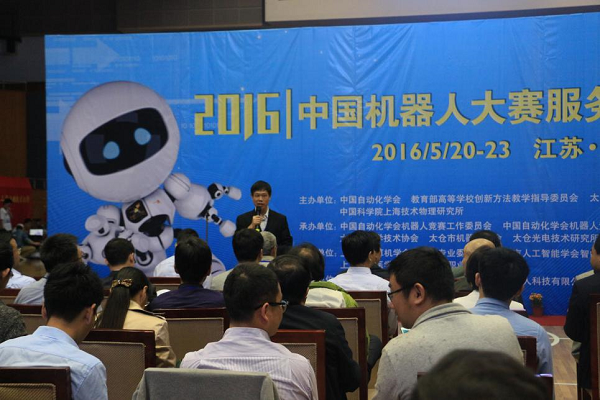
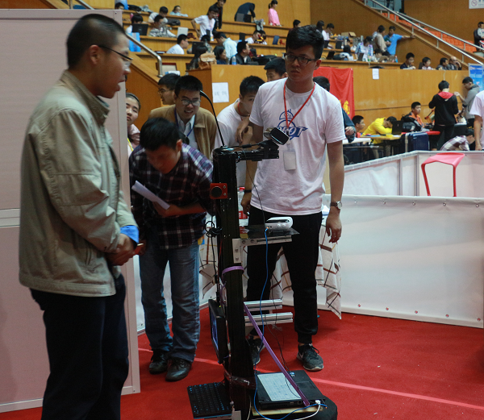
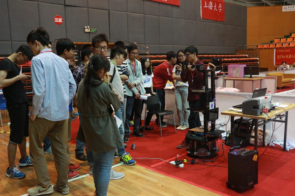
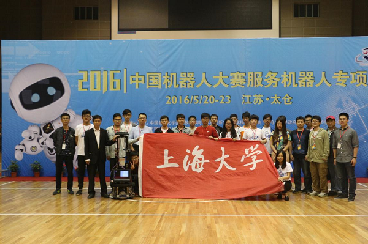

5月21日，2016中国机器人大赛服务机器人专项赛在太仓开幕。本次大赛由中国自动化学会、教育部高等学校创新方法教学指导委员会以及太仓市人民政府等单位主办，中国自动化学会机器人竞赛工作委员会承办，上海大学协办。
由中国自动化学会、教育部高等学校创新方法教学指导委员会以及太仓市人民政府等单位主办，中国自动化学会机器人竞赛工作委员会承办，上海大学协办的2016中国机器人大赛服务机器人专项赛于5月21日在太仓开幕。
中国自动化学会机器人竞赛工作委员会名誉主席、清华大学教授孙增新，中国自动化学会机器人竞赛工作委员会主任朱纪洪，太仓市人民政府副市长赵建初，中国自动化学会机器人竞赛工作委员会副主任、上海大学高工陈万米出席开幕式。在21日至23日期间，来自国内58支高校及中小学，269支队伍，近500名代表在激烈鏖战中奉献了一场精彩的科技盛宴。
 大赛开幕式上海大学自强队在本届大赛中取得四项冠军，两项亚军，两项季军，七项二等奖，两项三等奖的优异成绩，覆盖了自强队所有参赛的项目：自强队在家庭服务机器人赛项WhoIsWho项目、Shopping项目、智能家居项目、自由主题项目分别荣获冠军，在家庭服务机器人赛项GPSR项目、Follow项目分别荣获亚军，在家庭服务机器人赛项GPSR PLUS以及智慧城市项目荣获季军，在家庭服务机器人赛项创新创意项目、非限定项目自强队和自强2队分别荣获二等奖，在医疗与服务机器人创新设计与制作赛上荣获二等奖，在家庭仿真指令交互项目自强队和自强2队分别获得二等奖和三等奖，在自然语言交互项目中自强队和自强2队分别荣获三等奖和二等奖。
WhoIsWho比赛现场
21日下午，家庭服务机器人赛项WhoIsWho项目冠军被自强队斩获。同日，自强队还获得了Follow、非限定以及创新创意项目亚军。22日上午自强队获得GPRS项目亚军，并在同日的下午连续斩获智能家居、Shopping以及自由主题三项冠军。自强队的机器人不仅对周围环境进行实时的3D建模，像人类一样去完成一些很精细的动作，还做到了一定程度的人机交互，具有较强的理解人类语言、视觉识别以及处理较复杂问题的能力。
自由主题比赛现场
自强队全体成员合影
机器人大赛是学生提高创新能力的平台，同学们通过参加机器人大赛提升了动手能力，创新能力，团队协作能力。相信在自强队的努力下，同学们能在创新的道路上越走越远。
上海大学机自学院自强队
2016年5月25日